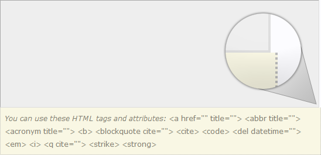
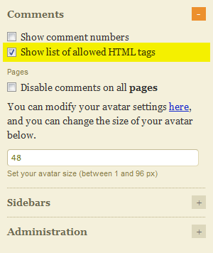
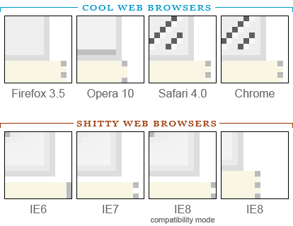
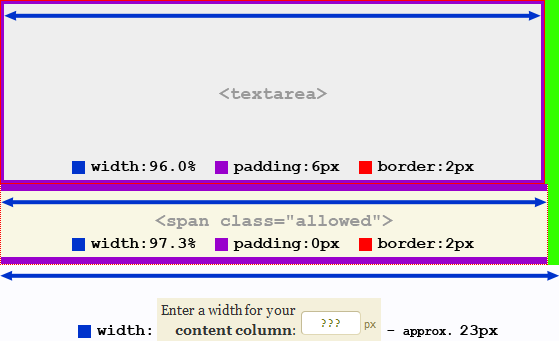

Who should read this article?
If you meet the following criteria, this post is for you:
- You use the Thesis theme for WordPress.
- You allow comments on your posts.
- Under Thesis Options, you have selected the option to “Show list of allowed HTML tags.”
- The solid border around your comment form’s
<textarea>does not line up with the dotted border of the element underneath it (the element that contains the text You can use these HTML tags and attributes…). - You want to fix the borders so they line up perfectly!
If you qualify, read on, valued reader! If you don’t qualify, read on, valued reader! If you don’t want to hear me nitpick petty details, then just skip to the solution.
What are these comment form borders you speak of?
Here is an example of a comment form with misaligned borders:

Show list of allowed HTML tags
Here is the Thesis Options menu where you enable this option:

Why aren’t my borders aligned?
If you show the allowed HTML tags, and your main content column width is outside the range of approximately 438px – 508px, then chances are your borders are effed up. Complicating the issue further is the fact that your borders will appear more effed up or less effed up, depending on the web browser you’re using. Below is a zoomed-in view of the borders on Matt Cutts’ comment form, as seen in some major web browsers (using Windows Vista for all of them except IE6 and IE7, which were captured via their respective Microsoft Virtual PC images running on Windows XP SP3):

The illustration above revealed a couple of interesting observations: (1) IE8 (which is supposed to be the most standards-compliant version of Internet Explorer) deviates the furthest from the intended dimensions. Every other web browser rendered the width of the top part (the <textarea> element) as either 686px or 687px, while IE8 rendered it at 682px! WTF, Microsoft? (2) IE8 in compatibility mode was NOT rendered exactly the same as it was in IE7.
Comment form HTML node tree
For your reference, I’ve created a simple HTML node tree of the comment form elements. Think of this as the raw HTML source code, with all the content, irrelevant attributes, and closing tags removed. The only information this node tree is meant to convey is the hierarchical nesting of HTML elements. This notation is helpful for understanding CSS styles and how they cascade. Check it out:
<form id="commentform"> <p> <input class="text_input" id="author"> <label> <span class="required"> <p> <input class="text_input" id="email"> <label> <span class="required"> <p> <input class="text_input" id="url"> <label> <p class="comment_box"> <textarea> <span class="allowed"> <span> <em> <acronym> <p class="subscribe-to-comments"> <input id="subscribe"> <label> <p> <input class="form_submit" id="submit">
If you take a look at lines 14 and 15, you’ll find the sibling elements who just can’t seem to get along. In plain English, that means that <textarea> and <span class="allowed"> are the two elements whose borders don’t line up. Therefore, our goal is to make these two elements the same width.
Thesis Writes Dynamic Stylesheets
If you haven’t spent much time tweaking the CSS styles for Thesis, you probably don’t know that the 2 primary stylesheets are dynamically built by your server, based on the font size you’ve defined in the Thesis Design Options menu, under Content Area. So for example, Thesis wants the border of its comment form to be 1px, regardless of what your font size is, but it also wants to define everything in em units (which is usually the preferred unit for maximizing cross-browser compatibility and displaying properly across many different devices and display resolutions). Therefore, if you set your content font size to 16 (where 1em = 16px), then Thesis will build a stylesheet that defines the border of its comment form to be 0.063em. Multiply (16 pixels/em)(0.063em), and you get a border width of 1.008px, which rounds to 1px. The only reason I’m mentioning this about Thesis is because my illustration below shows the <textarea> padding (defined in /wp-content/themes/thesis/custom/layout.css) as 3px on each side, but your layout.css file will define it in em units. Thesis will adjust the em value to ensure that all font sizes result in 3px of padding on all sides of the <textarea>, and 0px of padding on the sides of the <span class="allowed"> (it has 7px of padding on the top and bottom, but this doesn’t affect our border issue).

From looking at the illustration, you can see that our two elements will line up when the following equation is true:
(.96)(parent width) + 6px = (.973)(parent width)
Sub-pixel Rounding in Major Web Browsers
Even though the equation above has only one solution, we can actually take advantage of sub-pixel rounding to get a range of acceptable solutions. In order for these two elements to be the same width, the parent element (p.comment_box) needs to be in the range of approximately 415px – 485px. After taking the 23px into account, this means our content column width (which you can define in the Thesis Design Options menu) needs to be in the range of approximately 438px – 508px…otherwise the borders will break. If you left your content column width at the Thesis default value of 480px, then your borders should be okay…at least in SOME browsers. The chances of your borders lining up in IE8, however, are extremely slim…due to the fact that Internet Explorer is absolutely the shittiest browser in the World. With terrible browsers like Internet Explorer still in use, we need to find a solution that doesn’t require any unit conversions (e.g. 1.3% = 6px). This won’t guarantee that all browsers render the comment form at the same width, but it will guarantee that the borders line up.
Can you STFU and give us the solution now?
Sure. Copy this code and paste it in your custom.css file:
#commentform textarea{width:97.3%; padding:0;}
Serious? I just read all that crazy shit for one line of code?
Yup.
How do I know if this will work for my blog?
Simple. Just save this bookmarklet to your bookmarks, go stare at your effed up comment form borders, and click this sumbitch. Did it work?
OMG, you rock! How can I ever repay you?
Hmm…maybe you could click on some of these awesome social media widgets: